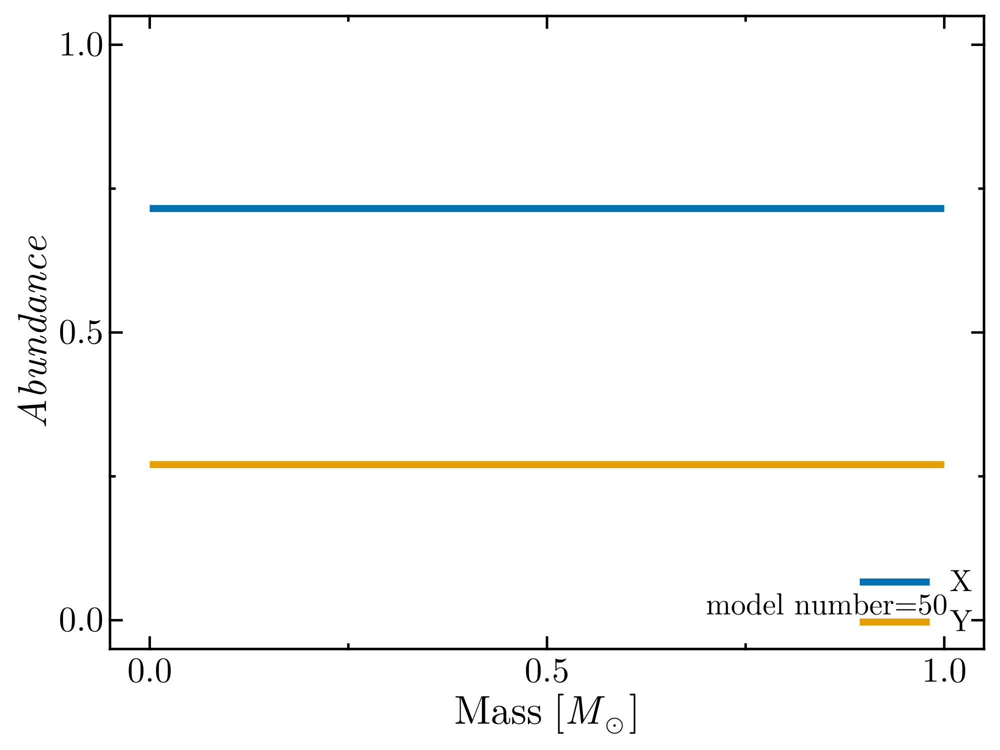

NuclearBurning.jl
This notebook provides a simple example of a star with simplified microphysics undergoing nuclear burning. Import all necessary Jems modules. We will also do some benchmarks, so we import BenchmarkTools as well.
using BenchmarkTools
using Jems.Chem
using Jems.Constants
using Jems.EOS
using Jems.Opacity
using Jems.NuclearNetworks
using Jems.StellarModels
using Jems.Evolution
using Jems.ReactionRatesModel creation
We start by creating the stellar model. In this example we consider a model with 6 independent variables, two of which correspond to composition. The independent variables here are $\ln(P)$, $\ln(T)$, $\ln(r)$, the luminosity $L$ and the mass fractions of Hydrogen and Helium.
The Evolution module has pre-defined equations corresponding to these variables, which we provide here. For now, only a simple (fully ionized) ideal gas law EOS is available. Similarly, only a simple simple electron scattering opacity equal to $\kappa=0.2(1+X)\;[\mathrm{cm^2\;g^{-1}}]$ is available.
varnames = [:lnρ, :lnT, :lnr, :lum]
structure_equations = [Evolution.equationHSE, Evolution.equationT,
Evolution.equationContinuity, Evolution.equationLuminosity]
remesh_split_functions = [StellarModels.split_lnr_lnρ, StellarModels.split_lum,
StellarModels.split_lnT, StellarModels.split_xa]
net = NuclearNetwork([:H1,:He4,:C12, :N14, :O16], [(:kipp_rates, :kipp_pp), (:kipp_rates, :kipp_cno)])
nz = 1000
nextra = 100
eos = EOS.IdealEOS(false)
opacity = Opacity.SimpleElectronScatteringOpacity()
sm = StellarModel(varnames, structure_equations, nz, nextra,
remesh_split_functions, net, eos, opacity);Initialize StellarModel and evaluate equations and jacobian
We do not have a working initial condition yet. We require pressure, temperature profiles. One simple available initial condition is that of an n=1 polytrope. This sets the pressure and density and computes the temperature from the EOS. The luminosity is initialized by assuming pure radiative transport for the temperature gradient produced by the polytrope.
The normal evolution loop will store the information at the end of the step into an attribute of type StellarStepInfo, stored at sm.esi (end step info). After initializing our polytrope we can mimic that behavior by calling set_end_step_info!(sm). We then 'cycle' this info into the information of a hypothetical previous step with cycle_step_info, so now sm.psi contains our initial condition. Finally we call set_start_step_info to use sm.psi (previous step info) to populate the information needed before the Newton solver in sm.ssi (start step info). At last we are in position to evaluate the equations and compute the Jacobian.
n=3
StellarModels.n_polytrope_initial_condition!(n, sm, MSUN, 100 * RSUN; initial_dt=10 * SECYEAR)
Evolution.set_step_info!(sm, sm.esi)
Evolution.cycle_step_info!(sm);
Evolution.set_step_info!(sm, sm.ssi)
Evolution.eval_jacobian_eqs!(sm)Benchmarking
The previous code leaves everything ready to solve the linearized system. For now we make use of a the serial Thomas algorithm for tridiagonal block matrices. We first show how long it takes to evaluate one row (meaning, one set of lower, diagonal and upper block) of the Jacobian matrix.
@benchmark Evolution.eval_jacobian_eqs_row!(sm, 2)BenchmarkTools.Trial: 10000 samples with 6 evaluations.
Range (min … max): 5.301 μs … 9.900 μs ┊ GC (min … max): 0.00% … 0.00%
Time (median): 5.373 μs ┊ GC (median): 0.00%
Time (mean ± σ): 5.396 μs ± 202.516 ns ┊ GC (mean ± σ): 0.00% ± 0.00%
█▆
▂▅██▄▂▂▂▂▂▂▂▁▂▁▁▂▂▂▂▂▂▂▂▁▂▂▁▁▁▁▁▂▁▁▁▁▂▂▁▁▁▂▁▁▁▁▁▁▁▁▁▁▂▁▁▁▁▂ ▂
5.3 μs Histogram: frequency by time 6.77 μs <
Memory estimate: 0 bytes, allocs estimate: 0.On my machine, this takes $\sim 3\;\mathrm{\mu s}$. This is a short amount of time, but we have a thousand cells to compute. Let's benchmark the calculation of the full jacobian.
@benchmark Evolution.eval_jacobian_eqs!(sm)BenchmarkTools.Trial: 679 samples with 1 evaluation.
Range (min … max): 6.906 ms … 8.474 ms ┊ GC (min … max): 0.00% … 0.00%
Time (median): 7.316 ms ┊ GC (median): 0.00%
Time (mean ± σ): 7.364 ms ± 233.472 μs ┊ GC (mean ± σ): 0.00% ± 0.00%
▁ ▄▁▆▇▅█▅█▄▆▆▅▆▃▂▃ ▁
▃▂▃▁▂▃▅▄▆█▆████████████████▇▇▆▇█▆▅▇▅▃▆▅▄▄▄▃▄▃▄▂▃▄▅▄▄▂▃▃▃▃▂▂ ▄
6.91 ms Histogram: frequency by time 8.05 ms <
Memory estimate: 656 bytes, allocs estimate: 7.And on my computer, this took about $1\;\mathrm{ms}$. Even though we have a thousand cells, the computation time was not a thousand times longer than computing the components of the jacobian for a single cell. The reason for this is that the calculation is parallelized so cells are done independently. However, I used 8 cores for my calculations, so the scaling is less than ideal. One of the main culprits here is the garbage collector. Current versions of julia can only perform garbage collection in a serial way, so it does not take advantage of all threads. Starting with julia 1.10, the garbage collector will be able to run in multiple threads, so that should alleviate issues with performance scaling.
To get an idea of how much a complete iteration of the solver takes, we need to benchmark both the calculation of the Jacobian and the matrix solver. This is because the matrix solver is destructive, as it uses the allocated Jacobian to store intermediate results. The time it takes to run only the matrix solver can be determined by substracting the previous benchmark from this one.
@benchmark begin
Evolution.eval_jacobian_eqs!($sm)
Evolution.thomas_algorithm!($sm)
endBenchmarkTools.Trial: 470 samples with 1 evaluation.
Range (min … max): 9.592 ms … 16.420 ms ┊ GC (min … max): 0.00% … 28.99%
Time (median): 10.059 ms ┊ GC (median): 0.00%
Time (mean ± σ): 10.636 ms ± 1.403 ms ┊ GC (mean ± σ): 2.77% ± 7.39%
▄▆█▃
▇█████▅▄▃▂▄▃▃▃█▇▄▄▃▃▂▂▂▁▁▁▁▂▁▁▁▁▁▁▁▁▁▁▁▁▁▁▁▁▁▁▁▁▂▂▂▃▂▂▃▃▂▁▃ ▃
9.59 ms Histogram: frequency by time 16 ms <
Memory estimate: 4.69 MiB, allocs estimate: 24007.Evolving our model
We can now evolve our star! We will initiate a $1M_\odot$ star with a radius of $100R_\odot$ using an n=1 polytrope (it would be much better to use n=3 or n=3/2 polytropes, for now I only use this because there is a simple analytical solution). The star is expected to contract until it ignites hydrogen. We set a few options for the simulation with a toml file, which we generate dynamically. These simulation should complete in about a thousand steps once it reaches the max_center_T limit.
Output is stored in HDF5 files, and easy to use functions are provided with the Evolution module to turn these HDF5 files into DataFrame objects. HDF5 output is compressed by default.
open("example_options.toml", "w") do file
write(file,
"""
[remesh]
do_remesh = true
[solver]
newton_max_iter_first_step = 1000
newton_max_iter = 200
[timestep]
dt_max_increase = 10.0
delta_R_limit = 0.01
delta_Tc_limit = 0.01
[termination]
max_model_number = 2000
max_center_T = 4e7
[plotting]
do_plotting = false
wait_at_termination = false
plotting_interval = 1
window_specs = ["HR", "profile", "history"]
window_layouts = [[1, 1], # arrangement of plots
[2, 1],
[3, 1]
]
profile_xaxis = 'mass'
profile_yaxes = ['log10_T']
profile_alt_yaxes = ['X','Y']
history_xaxis = 'star_age'
history_yaxes = ['R_surf']
history_alt_yaxes = ['T_center']
[io]
profile_interval = 50
""")
end
StellarModels.set_options!(sm.opt, "./example_options.toml")
rm(sm.opt.io.hdf5_history_filename; force=true)
rm(sm.opt.io.hdf5_profile_filename; force=true)
StellarModels.n_polytrope_initial_condition!(n, sm, 1*MSUN, 100 * RSUN; initial_dt=1000 * SECYEAR)
@time sm = Evolution.do_evolution_loop(sm);Found first model
model logdt logL logTeff logPs logρs H_cntr iters
mass age logR logTc logPc logρc He_cntr zones
-------------------------------------------------------------------------------
1 3.000 0.7689 2.968 0.7152 -10.47 1.000 7
1.000 1000. 1.841e-10 5.007 9.138 -4.086 1.623e-37 1004
model logdt logL logTeff logPs logρs H_cntr iters
mass age logR logTc logPc logρc He_cntr zones
-------------------------------------------------------------------------------
10 2.570 0.7394 2.981 0.7969 -10.40 1.000 3
1.000 4185. 1.835e-10 5.040 9.256 -4.002 2.016e-36 1004
model logdt logL logTeff logPs logρs H_cntr iters
mass age logR logTc logPc logρc He_cntr zones
-------------------------------------------------------------------------------
20 2.660 0.7222 2.998 0.8816 -10.33 1.000 3
1.000 8381. 1.829e-10 5.079 9.397 -3.900 2.340e-35 1004
model logdt logL logTeff logPs logρs H_cntr iters
mass age logR logTc logPc logρc He_cntr zones
-------------------------------------------------------------------------------
30 2.728 0.7117 3.016 0.9667 -10.27 1.000 3
1.000 1.338e+04 1.823e-10 5.120 9.549 -3.789 2.778e-34 1004
model logdt logL logTeff logPs logρs H_cntr iters
mass age logR logTc logPc logρc He_cntr zones
-------------------------------------------------------------------------------
40 2.786 0.7051 3.036 1.052 -10.20 1.000 3
1.000 1.915e+04 1.817e-10 5.163 9.708 -3.672 3.251e-33 1004
model logdt logL logTeff logPs logρs H_cntr iters
mass age logR logTc logPc logρc He_cntr zones
-------------------------------------------------------------------------------
50 2.839 0.7008 3.056 1.137 -10.14 1.000 3
1.000 2.570e+04 1.811e-10 5.205 9.872 -3.550 3.652e-32 1004
model logdt logL logTeff logPs logρs H_cntr iters
mass age logR logTc logPc logρc He_cntr zones
-------------------------------------------------------------------------------
60 2.888 0.6981 3.077 1.223 -10.07 1.000 3
1.000 3.305e+04 1.805e-10 5.248 10.04 -3.426 3.888e-31 1004
model logdt logL logTeff logPs logρs H_cntr iters
mass age logR logTc logPc logρc He_cntr zones
-------------------------------------------------------------------------------
70 2.935 0.6964 3.098 1.308 -10.01 1.000 3
1.000 4.126e+04 1.799e-10 5.291 10.21 -3.300 3.904e-30 1004
model logdt logL logTeff logPs logρs H_cntr iters
mass age logR logTc logPc logρc He_cntr zones
-------------------------------------------------------------------------------
80 2.981 0.6953 3.119 1.394 -9.943 1.000 3
1.000 5.039e+04 1.793e-10 5.334 10.38 -3.173 3.693e-29 1004
model logdt logL logTeff logPs logρs H_cntr iters
mass age logR logTc logPc logρc He_cntr zones
-------------------------------------------------------------------------------
90 3.025 0.6946 3.140 1.479 -9.878 1.000 3
1.000 6.051e+04 1.786e-10 5.377 10.55 -3.045 3.290e-28 1004
model logdt logL logTeff logPs logρs H_cntr iters
mass age logR logTc logPc logρc He_cntr zones
-------------------------------------------------------------------------------
100 3.069 0.6941 3.161 1.565 -9.814 1.000 3
1.000 7.172e+04 1.780e-10 5.420 10.72 -2.916 2.763e-27 1004
model logdt logL logTeff logPs logρs H_cntr iters
mass age logR logTc logPc logρc He_cntr zones
-------------------------------------------------------------------------------
110 3.113 0.6939 3.183 1.651 -9.750 1.000 3
1.000 8.412e+04 1.774e-10 5.463 10.89 -2.787 2.192e-26 1004
model logdt logL logTeff logPs logρs H_cntr iters
mass age logR logTc logPc logρc He_cntr zones
-------------------------------------------------------------------------------
120 3.156 0.6937 3.204 1.736 -9.685 1.000 3
1.000 9.782e+04 1.768e-10 5.506 11.06 -2.658 1.644e-25 1004
model logdt logL logTeff logPs logρs H_cntr iters
mass age logR logTc logPc logρc He_cntr zones
-------------------------------------------------------------------------------
130 3.199 0.6936 3.226 1.822 -9.621 1.000 3
1.000 1.130e+05 1.762e-10 5.549 11.24 -2.529 1.168e-24 1004
model logdt logL logTeff logPs logρs H_cntr iters
mass age logR logTc logPc logρc He_cntr zones
-------------------------------------------------------------------------------
140 3.242 0.6935 3.247 1.907 -9.557 1.000 3
1.000 1.297e+05 1.756e-10 5.592 11.41 -2.400 7.871e-24 1004
model logdt logL logTeff logPs logρs H_cntr iters
mass age logR logTc logPc logρc He_cntr zones
-------------------------------------------------------------------------------
150 3.285 0.6935 3.268 1.993 -9.493 1.000 3
1.000 1.481e+05 1.749e-10 5.635 11.58 -2.271 5.042e-23 1004
model logdt logL logTeff logPs logρs H_cntr iters
mass age logR logTc logPc logρc He_cntr zones
-------------------------------------------------------------------------------
160 3.328 0.6935 3.290 2.079 -9.429 1.000 3
1.000 1.685e+05 1.743e-10 5.678 11.75 -2.142 3.075e-22 1004
model logdt logL logTeff logPs logρs H_cntr iters
mass age logR logTc logPc logρc He_cntr zones
-------------------------------------------------------------------------------
170 3.371 0.6934 3.311 2.164 -9.364 1.000 3
1.000 1.910e+05 1.737e-10 5.721 11.93 -2.013 1.788e-21 1004
model logdt logL logTeff logPs logρs H_cntr iters
mass age logR logTc logPc logρc He_cntr zones
-------------------------------------------------------------------------------
180 3.414 0.6934 3.332 2.250 -9.300 1.000 3
1.000 2.158e+05 1.731e-10 5.764 12.10 -1.884 9.927e-21 1004
model logdt logL logTeff logPs logρs H_cntr iters
mass age logR logTc logPc logρc He_cntr zones
-------------------------------------------------------------------------------
190 3.457 0.6934 3.354 2.335 -9.236 1.000 3
1.000 2.432e+05 1.725e-10 5.807 12.27 -1.755 5.272e-20 1004
model logdt logL logTeff logPs logρs H_cntr iters
mass age logR logTc logPc logρc He_cntr zones
-------------------------------------------------------------------------------
200 3.500 0.6934 3.375 2.421 -9.172 1.000 3
1.000 2.735e+05 1.719e-10 5.850 12.44 -1.626 2.682e-19 1004
model logdt logL logTeff logPs logρs H_cntr iters
mass age logR logTc logPc logρc He_cntr zones
-------------------------------------------------------------------------------
210 3.543 0.6934 3.397 2.506 -9.108 1.000 3
1.000 3.069e+05 1.713e-10 5.893 12.61 -1.497 1.309e-18 1004
model logdt logL logTeff logPs logρs H_cntr iters
mass age logR logTc logPc logρc He_cntr zones
-------------------------------------------------------------------------------
220 3.583 0.6934 3.417 2.588 -9.047 1.000 3
1.000 3.420e+05 1.707e-10 5.934 12.78 -1.375 5.689e-18 1005
model logdt logL logTeff logPs logρs H_cntr iters
mass age logR logTc logPc logρc He_cntr zones
-------------------------------------------------------------------------------
230 3.627 0.6934 3.438 2.673 -8.982 1.000 3
1.000 3.825e+05 1.701e-10 5.977 12.95 -1.246 2.571e-17 1005
model logdt logL logTeff logPs logρs H_cntr iters
mass age logR logTc logPc logρc He_cntr zones
-------------------------------------------------------------------------------
240 3.668 0.6934 3.459 2.755 -8.921 1.000 3
1.000 4.250e+05 1.695e-10 6.018 13.11 -1.123 1.041e-16 1006
model logdt logL logTeff logPs logρs H_cntr iters
mass age logR logTc logPc logρc He_cntr zones
-------------------------------------------------------------------------------
250 3.710 0.6934 3.480 2.841 -8.857 1.000 3
1.000 4.741e+05 1.689e-10 6.061 13.28 -0.9944 4.374e-16 1006
model logdt logL logTeff logPs logρs H_cntr iters
mass age logR logTc logPc logρc He_cntr zones
-------------------------------------------------------------------------------
260 3.751 0.6934 3.501 2.922 -8.796 1.000 3
1.000 5.256e+05 1.683e-10 6.102 13.45 -0.8718 1.657e-15 1007
model logdt logL logTeff logPs logρs H_cntr iters
mass age logR logTc logPc logρc He_cntr zones
-------------------------------------------------------------------------------
270 3.794 0.6934 3.522 3.008 -8.732 1.000 3
1.000 5.851e+05 1.677e-10 6.145 13.62 -0.7430 6.499e-15 1007
model logdt logL logTeff logPs logρs H_cntr iters
mass age logR logTc logPc logρc He_cntr zones
-------------------------------------------------------------------------------
280 3.844 0.6934 3.541 3.085 -8.674 1.000 3
1.000 6.443e+05 1.671e-10 6.183 13.77 -0.6268 2.167e-14 1009
model logdt logL logTeff logPs logρs H_cntr iters
mass age logR logTc logPc logρc He_cntr zones
-------------------------------------------------------------------------------
290 3.876 0.6934 3.563 3.170 -8.610 1.000 3
1.000 7.161e+05 1.665e-10 6.226 13.95 -0.4980 7.992e-14 1009
model logdt logL logTeff logPs logρs H_cntr iters
mass age logR logTc logPc logρc He_cntr zones
-------------------------------------------------------------------------------
300 3.916 0.6934 3.583 3.252 -8.549 1.000 3
1.000 7.914e+05 1.659e-10 6.267 14.11 -0.3756 2.685e-13 1010
model logdt logL logTeff logPs logρs H_cntr iters
mass age logR logTc logPc logρc He_cntr zones
-------------------------------------------------------------------------------
310 3.959 0.6934 3.604 3.338 -8.484 1.000 3
1.000 8.786e+05 1.653e-10 6.310 14.28 -0.2469 9.325e-13 1010
model logdt logL logTeff logPs logρs H_cntr iters
mass age logR logTc logPc logρc He_cntr zones
-------------------------------------------------------------------------------
320 4.000 0.6934 3.625 3.419 -8.423 1.000 3
1.000 9.699e+05 1.647e-10 6.351 14.44 -0.1244 2.965e-12 1011
model logdt logL logTeff logPs logρs H_cntr iters
mass age logR logTc logPc logρc He_cntr zones
-------------------------------------------------------------------------------
330 4.052 0.6934 3.645 3.500 -8.362 1.000 3
1.000 1.070e+06 1.641e-10 6.392 14.61 -0.001979 9.191e-12 1012
model logdt logL logTeff logPs logρs H_cntr iters
mass age logR logTc logPc logρc He_cntr zones
-------------------------------------------------------------------------------
340 4.084 0.6934 3.667 3.586 -8.298 1.000 3
1.000 1.186e+06 1.635e-10 6.434 14.78 0.1267 2.940e-11 1012
model logdt logL logTeff logPs logρs H_cntr iters
mass age logR logTc logPc logρc He_cntr zones
-------------------------------------------------------------------------------
350 4.121 0.6934 3.685 3.661 -8.242 1.000 3
1.000 1.298e+06 1.630e-10 6.472 14.93 0.2394 7.968e-11 1015
model logdt logL logTeff logPs logρs H_cntr iters
mass age logR logTc logPc logρc He_cntr zones
-------------------------------------------------------------------------------
360 4.162 0.6934 3.706 3.742 -8.181 1.000 3
1.000 1.430e+06 1.624e-10 6.513 15.09 0.3618 2.300e-10 1015
model logdt logL logTeff logPs logρs H_cntr iters
mass age logR logTc logPc logρc He_cntr zones
-------------------------------------------------------------------------------
370 4.199 0.6934 3.724 3.817 -8.124 1.000 3
1.000 1.564e+06 1.618e-10 6.550 15.24 0.4746 5.986e-10 1017
model logdt logL logTeff logPs logρs H_cntr iters
mass age logR logTc logPc logρc He_cntr zones
-------------------------------------------------------------------------------
380 4.242 0.6934 3.746 3.903 -8.060 1.000 3
1.000 1.731e+06 1.612e-10 6.593 15.41 0.6032 1.744e-09 1017
model logdt logL logTeff logPs logρs H_cntr iters
mass age logR logTc logPc logρc He_cntr zones
-------------------------------------------------------------------------------
390 4.292 0.6934 3.765 3.980 -8.002 1.000 3
1.000 1.897e+06 1.607e-10 6.632 15.57 0.7193 4.484e-09 1019
model logdt logL logTeff logPs logρs H_cntr iters
mass age logR logTc logPc logρc He_cntr zones
-------------------------------------------------------------------------------
400 4.322 0.6934 3.785 4.062 -7.941 1.000 3
1.000 2.089e+06 1.601e-10 6.673 15.73 0.8416 1.189e-08 1020
model logdt logL logTeff logPs logρs H_cntr iters
mass age logR logTc logPc logρc He_cntr zones
-------------------------------------------------------------------------------
410 4.362 0.6934 3.806 4.143 -7.880 1.000 3
1.000 2.299e+06 1.595e-10 6.714 15.89 0.9639 3.093e-08 1021
model logdt logL logTeff logPs logρs H_cntr iters
mass age logR logTc logPc logρc He_cntr zones
-------------------------------------------------------------------------------
420 4.414 0.6934 3.826 4.225 -7.819 1.000 3
1.000 2.530e+06 1.589e-10 6.754 16.06 1.086 7.890e-08 1022
model logdt logL logTeff logPs logρs H_cntr iters
mass age logR logTc logPc logρc He_cntr zones
-------------------------------------------------------------------------------
430 4.444 0.6933 3.847 4.306 -7.758 1.000 3
1.000 2.784e+06 1.583e-10 6.795 16.22 1.208 1.976e-07 1023
model logdt logL logTeff logPs logρs H_cntr iters
mass age logR logTc logPc logρc He_cntr zones
-------------------------------------------------------------------------------
440 4.485 0.6932 3.867 4.387 -7.697 1.000 3
1.000 3.063e+06 1.577e-10 6.836 16.38 1.330 4.859e-07 1024
model logdt logL logTeff logPs logρs H_cntr iters
mass age logR logTc logPc logρc He_cntr zones
-------------------------------------------------------------------------------
450 4.527 0.6929 3.887 4.469 -7.636 1.000 3
1.000 3.370e+06 1.572e-10 6.877 16.55 1.452 1.174e-06 1025
model logdt logL logTeff logPs logρs H_cntr iters
mass age logR logTc logPc logρc He_cntr zones
-------------------------------------------------------------------------------
460 4.566 0.6924 3.906 4.544 -7.579 1.000 3
1.000 3.680e+06 1.566e-10 6.914 16.69 1.563 2.610e-06 1027
model logdt logL logTeff logPs logρs H_cntr iters
mass age logR logTc logPc logρc He_cntr zones
-------------------------------------------------------------------------------
470 4.610 0.6912 3.926 4.625 -7.518 1.0000 3
1.000 4.051e+06 1.560e-10 6.955 16.85 1.681 6.117e-06 1028
model logdt logL logTeff logPs logρs H_cntr iters
mass age logR logTc logPc logρc He_cntr zones
-------------------------------------------------------------------------------
480 4.669 0.6887 3.945 4.706 -7.457 1.0000 3
1.000 4.463e+06 1.555e-10 6.997 17.01 1.796 1.413e-05 1029
model logdt logL logTeff logPs logρs H_cntr iters
mass age logR logTc logPc logρc He_cntr zones
-------------------------------------------------------------------------------
490 4.717 0.6830 3.965 4.792 -7.391 1.0000 3
1.000 4.953e+06 1.548e-10 7.040 17.17 1.909 3.361e-05 1029
model logdt logL logTeff logPs logρs H_cntr iters
mass age logR logTc logPc logρc He_cntr zones
-------------------------------------------------------------------------------
500 4.785 0.6732 3.981 4.866 -7.333 0.9999 3
1.000 5.450e+06 1.543e-10 7.079 17.29 1.994 7.119e-05 1032
model logdt logL logTeff logPs logρs H_cntr iters
mass age logR logTc logPc logρc He_cntr zones
-------------------------------------------------------------------------------
510 4.892 0.6521 3.996 4.946 -7.268 0.9998 4
1.000 6.110e+06 1.537e-10 7.121 17.40 2.065 0.0001604 1032
model logdt logL logTeff logPs logρs H_cntr iters
mass age logR logTc logPc logρc He_cntr zones
-------------------------------------------------------------------------------
520 5.088 0.6101 4.005 5.024 -7.199 0.9996 3
1.000 7.044e+06 1.532e-10 7.153 17.48 2.107 0.0003635 1033
model logdt logL logTeff logPs logρs H_cntr iters
mass age logR logTc logPc logρc He_cntr zones
-------------------------------------------------------------------------------
530 5.989 0.5309 4.002 5.090 -7.129 0.9987 3
1.000 1.028e+07 1.527e-10 7.166 17.50 2.112 0.001280 1033
model logdt logL logTeff logPs logρs H_cntr iters
mass age logR logTc logPc logρc He_cntr zones
-------------------------------------------------------------------------------
540 8.286 0.6593 4.016 5.018 -7.215 0.4358 3
1.000 2.066e+09 1.532e-10 7.253 17.72 2.441 0.5642 1033
model logdt logL logTeff logPs logρs H_cntr iters
mass age logR logTc logPc logρc He_cntr zones
-------------------------------------------------------------------------------
550 7.954 0.7976 4.027 4.924 -7.321 0.1608 3
1.000 3.354e+09 1.539e-10 7.336 18.09 2.856 0.8392 1033
model logdt logL logTeff logPs logρs H_cntr iters
mass age logR logTc logPc logρc He_cntr zones
-------------------------------------------------------------------------------
560 7.661 0.9006 4.030 4.831 -7.416 0.06755 3
1.000 3.982e+09 1.546e-10 7.410 18.46 3.211 0.9325 1033
model logdt logL logTeff logPs logρs H_cntr iters
mass age logR logTc logPc logρc He_cntr zones
-------------------------------------------------------------------------------
570 7.400 0.9779 4.026 4.738 -7.505 0.03181 3
1.000 4.315e+09 1.552e-10 7.478 18.82 3.525 0.9682 1033
model logdt logL logTeff logPs logρs H_cntr iters
mass age logR logTc logPc logρc He_cntr zones
-------------------------------------------------------------------------------
580 7.162 1.036 4.017 4.646 -7.589 0.01629 3
1.000 4.503e+09 1.559e-10 7.543 19.16 3.812 0.9837 1033
model logdt logL logTeff logPs logρs H_cntr iters
mass age logR logTc logPc logρc He_cntr zones
-------------------------------------------------------------------------------
590 6.940 1.081 4.005 4.554 -7.669 0.008887 3
1.000 4.613e+09 1.565e-10 7.606 19.48 4.077 0.9911 1033
Reached maximum central temperature
37.828270 seconds (195.40 M allocations: 13.718 GiB, 4.50% gc time, 14.58% compilation time: <1% of which was recompilation)Plotting with Makie
Now that our simulation is complete we can analyze the results. We make use of the Makie package for this. I'm not a fan of the Makie defaults, so I adjust them. I normally also adjust the fonts to be consistent with \LaTeX, but I avoid that here so we don't need to distribute those fonts together with Jems.
using CairoMakie, LaTeXStrings, MathTeXEngine
basic_theme = Theme(fonts=(regular=texfont(:text), bold=texfont(:bold),
italic=texfont(:italic), bold_italic=texfont(:bolditalic)),
fontsize=30, resolution=(1000, 750), linewidth=7,
Axis=(xlabelsize=40, ylabelsize=40, titlesize=40, xgridvisible=false, ygridvisible=false,
spinewidth=2.5, xminorticksvisible=true, yminorticksvisible=true, xtickalign=1, ytickalign=1,
xminortickalign=1, yminortickalign=1, xticksize=14, xtickwidth=2.5, yticksize=14,
ytickwidth=2.5, xminorticksize=7, xminortickwidth=2.5, yminorticksize=7, yminortickwidth=2.5,
xticklabelsize=35, yticklabelsize=35, xticksmirrored=true, yticksmirrored=true),
Legend=(patchsize=(70, 10), framevisible=false, patchlabelgap=20, rowgap=10))
set_theme!(basic_theme)Compare against polytropes
Below we see how the profile of the star compares to different polytropes. We make use of the facility tools to obtain DataFrame objects out of the hdf5 output. In particular, get_profile_names_from_hdf5 will provide the names of all profiles contained within the hdf5 file, while get_profile_dataframe_from_hdf5 is used to obtain one DataFrame corresponding to one stellar profile. The animation is constructed using the Observable type that makie provides. Note that the zero points of the polytropes are arbitrary.
profile_names = StellarModels.get_profile_names_from_hdf5("profiles.hdf5")
f = Figure();
ax = Axis(f[1, 1]; xlabel=L"\log_{10}(\rho/\mathrm{[g\;cm^{-3}]})", ylabel=L"\log_{10}(P/\mathrm{[dyn]})")
pname = Observable(profile_names[1])
profile = @lift(StellarModels.get_profile_dataframe_from_hdf5("profiles.hdf5", $pname))
#To see why this is done this way, see https://docs.makie.org/stable/explanations/nodes/index.html#problems_with_synchronous_updates
#the main issue is that remeshing changes the size of the arrays
log10_ρ = @lift($profile[!, "log10_ρ"])
log10_P = Observable(rand(length(log10_ρ.val)))
profile_line = lines!(ax, log10_ρ, log10_P; label="real profile")
xvals = LinRange(-13, 4, 100)
lines!(ax, xvals, (1 + 1 / 1) .* xvals .+ 20; label="n=1")
lines!(ax, xvals, (1 + 1 / (1.5)) .* xvals .+ 15; label="n=1.5")
lines!(ax, xvals, (1 + 1 / 3) .* xvals .+ 15; label="n=3")
axislegend(ax; position=:rb)
model_number_str = @lift("model number=$(parse(Int,$pname))")
profile_text = text!(ax, -10, 20; text=model_number_str)
record(f, "rho_P_evolution.gif", profile_names[1:end]; framerate=2) do profile_name
profile = StellarModels.get_profile_dataframe_from_hdf5("profiles.hdf5", profile_name)
log10_P.val = profile[!, "log10_P"]
pname[] = profile_name
end"rho_P_evolution.gif"
Check nuclear burning
We see that the structure evolves towards an n=3 polytrope. Deviations near the core are due to the non-homogeneous composition as hydrogen is burnt. We can similarly visualize how the hydrogen mass fraction changes in the simulation. In here, only one frame shows the hydrogen that was burnt. To better visualize that you can adjust profile_interval in the IO options (and probably adjust the framerate).
profile_names = StellarModels.get_profile_names_from_hdf5("profiles.hdf5")
f = Figure();
ax = Axis(f[1, 1]; xlabel=L"\mathrm{Mass}\;[M_\odot]", ylabel=L"X")
pname = Observable(profile_names[1])
profile = @lift(StellarModels.get_profile_dataframe_from_hdf5("profiles.hdf5", $pname))
mass = @lift($profile[!, "mass"])
X = Observable(rand(length(mass.val)))
model_number_str = @lift("model number=$(parse(Int,$pname))")
profile_line = lines!(ax, mass, X; label="real profile")
profile_text = text!(ax, 0.7, 0.0; text=model_number_str)
record(f, "X_evolution.gif", profile_names[1:end]; framerate=2) do profile_name
profile = StellarModels.get_profile_dataframe_from_hdf5("profiles.hdf5", profile_name)
X.val = profile[!, "X"]
pname[] = profile_name
end"X_evolution.gif"
Plot a funny HR diagram
Finally, we can also access the history data of the simulation. We use this to plot a simple HR diagram. As our microphysics are very simplistic, and the initial condition is not very physical, this looks a bit funny!
f = Figure();
ax = Axis(f[1, 1]; xlabel=L"\log_{10}(T_\mathrm{eff}/[K])", ylabel=L"\log_{10}(L/L_\odot)", xreversed=true)
history = StellarModels.get_history_dataframe_from_hdf5("history.hdf5")
lines!(ax, log10.(history[!, "T_surf"]), log10.(history[!, "L_surf"]))
f
Perform some cleanup
Internally we want to prevent storing any of the hdf5 files into our git repos, so I remove them. You can also take advantage of julia as a scripting language to post-process your simulation output in a similar way.
rm("history.hdf5")
rm("profiles.hdf5")
rm("example_options.toml")This page was generated using Literate.jl.